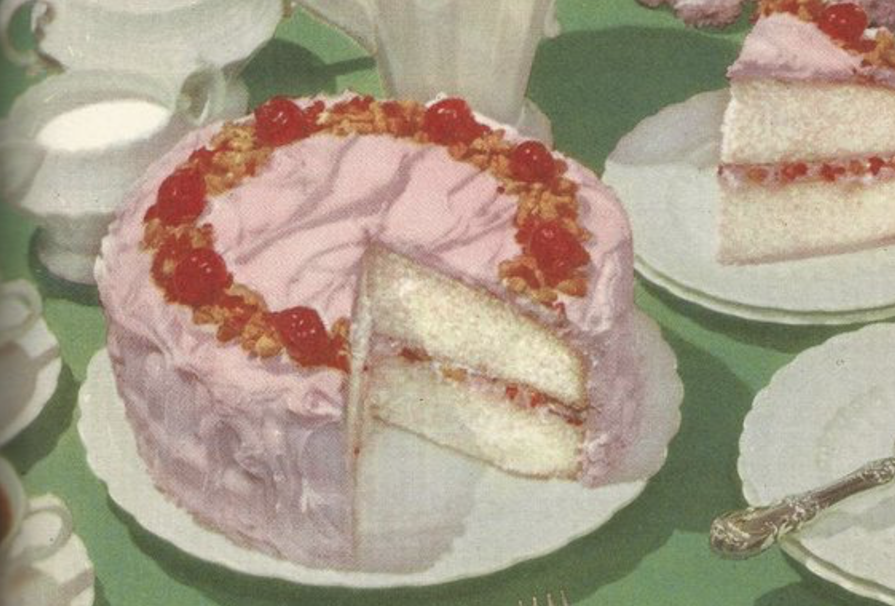

Lord Baltimore Cake

Description
This Lord Baltimore Cake is a rich and decadent dessert, perfect for special occasions. It features layers of moist cake filled with a luscious frosting and adorned with chopped walnuts and maraschino cherries, making it a visually stunning and delicious treat.
Ingredients
Bake 2 layers of white or yellow cake using your favorite recipe, or packaged cake mix. Cool thoroughly. Follow directions below for frosting and filling.
- 2 layers of white or yellow cake
- 1 cup sugar
- 1/2 cup water
- 1/3 cup light corn syrup
- 2 egg whites
- 1/4 teaspoon salt
- 1 teaspoon vanilla
- Few drops red food coloring
- 1/4 cup fine dry macaroon crumbs
- 1/4 cup chopped walnuts
- 8 Maraschino cherries, chopped
- 8 whole Maraschino cherries
- 1/3 cup chopped walnuts
Steps
- Combine sugar, water, and corn syrup in saucepan; stir over low heat until sugar dissolves; bring to boiling. Cover; boil 2 to 3 minutes.
- Remove cover; boil without stirring to 240°F. on a candy thermometer, or soft ball stage.
- Wipe any crystals from saucepan with dampened cheesecloth during cooking. Remove from heat.
- Whip egg whites until foamy; add salt; whip stiff.
- Pour syrup on eggs in fine stream, beating steadily.
- Continue beating until frosting stands in peaks. Add vanilla.
- Tint pink with red coloring.
- Put 1/3 of frosting in a small bowl; stir in next 3 ingredients.
- Spread on a cake layer. Top with second layer.
- Spread remaining frosting on top and sides of cake.
- Garnish with whole cherries and remaining nuts.
- Makes 1 cake.